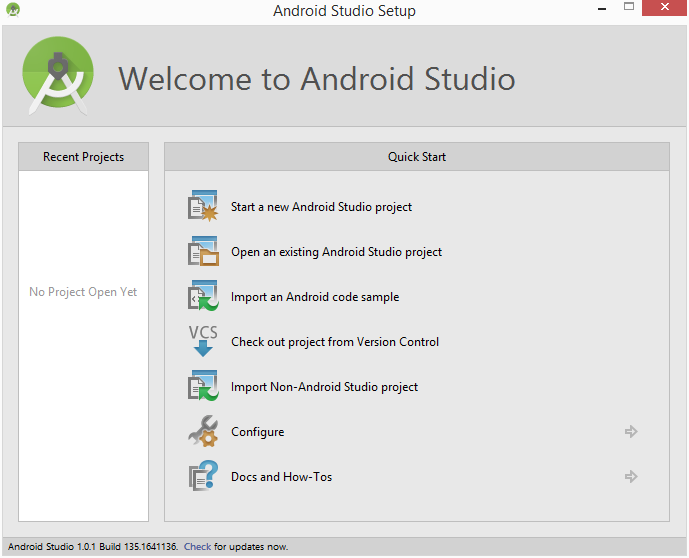

Getting Started
Windows Android Setup
Java is the programming language mainly used to develop android applicaitons. As a result, the Java Development Kit (JDK) is the first component that must be installed.
Windows JDK Installation
For Windows systems, the JDK may be obtained from Oracle Corporation’s website.
Assuming that a suitable JDK is not already installed on your system, download the latest JDK package that matches the destination computer system. Once downloaded, launch the installation executable and follow the on screen instructions to complete the installation process.
On some windows system, the launcher script of Android Studio does not find where java is installed. If you encounter this problem you need to set an environment variable to indicate the correct location.
Select Start menu > Computer > System Properties > Advanced System Properties. Then open Advanced tab > Environment Variables and add a new system variable JAVA_HOME that points to your JDK folder, for example C:\Program Files\Java\jdk1.7.0_21.
Download the Android Studio Package
Android Studio may be downloaded from here
Installing Android Studio
Launch the .exe file you just downloaded and follow the on screen instructions.
Android Studio Setup Wizard
The first time that Android Studio is launched after being installed, a dialog will appear providing the option to import settings from a previous Android Studio version. If you have settings from a previous version and would like to import them into the latest installation, select the appropriate option and location. Alternatively, indicate that you do not need to import any previous settings and click on the OK button to proceed.
After Android Studio has finished loading, the setup wizard will appear as shown below

Click on the Next button, choose the Standard installation option and click on Next once again. On the license agreement screen, select and accept each of the licenses listed before clicking on Finish to complete the setup process. The Welcome to Android Studio screen should then appear:
Installing the Latest Android SDK Packages
The steps performed so far have installed Java, the Android Studio IDE and the current set of default Android SDK packages. Before proceeding, it is worth taking some time to verify which packages are installed and to install any missing packages.
This task can be performed using the Android SDK Manager, which may be launched from within the Android Studio tool by selecting the Configure -> SDK Manager option from within the Android Studio welcome dialog. Once invoked, the SDK Manager tool will appear as
Within the Android SDK Manager, make sure that the check boxes next to the following packages are listed as Installed in the Status column:
Tools > Android SDK Tools
Tools > Android SDK Platform-tools
Tools > Android SDK Build-tools
SDK Platform (most recent version)> SDK Platform
SDK Platform (most recent version) > ARM EABI v7a System Image
Extras -> Android Support Repository
Extras > Android Support Library
Extras -> Google Repository
Extras -> Google USB Driver (Required on Windows systems only)
Extras > Intel x86 Emulator Accelerator (HAXM installer)
In the event that any of the above packages are listed as Not Installed, simply select the checkboxes next to those packages and click on the Install packages button to initiate the installation process. In the resulting dialog, accept the license agreements before clicking on the Install button. The SDK Manager will then begin to download and install the designated packages. As the installation proceeds, a progress bar will appear at the bottom of the manager window indicating the status of the installation.
Once the installation is complete, review the package list and make sure that the selected packages are now listed as Installed in the Status column. If any are listed as Not installed, make sure they are selected and click on the Install packages… button again.
Making the Android SDK Tools Command-Line Accessible
Most of the time, the underlying tools of the Android SDK will be accessed from within the Android Studio environment. That being said, however, there will also be instances where it will be useful to be able to invoke those tools from a command prompt or terminal window. In order for the operating system on which you are developing to be able to find these tools, it will be necessary to add them to the system’s PATH environment variable.
Regardless of operating system, the PATH variable needs to be configured to include the following paths (where {path_to_android_sdk_installation} represents the file system location into which the SDK was installed):
{path_to_android_sdk_installation}/sdk/tools
{path_to_android_sdk_installation}/sdk/platform-tools
The location of the SDK on your system can be identified by launching the SDK Manager and referring to the SDK Path: field located at the top of the manager window as highlighted below